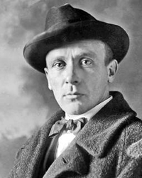

Михайло Булгаков
Роки життя:1891−1940
Читати:
«Майстер і Маргарита» (скорочено)
Булкагов народився 15 травня 1891 р. в Києві. Батько, Опанас Іванович, викладав у Київській духовній академії курс історії західних віросповідань. Мати, Варвара Михайлівна, виховувала дітей, яких було семеро. Сім'я дала майбутньому письменникові дуже багато — виховала у нього любов до мистецтва, повагу до людей і працелюбність.
Дитинство і юність Булкагова пройшли у Києві, з яким пов'язане становлення митця. Він захоплювався класичною літературою й архітектурою, музикою та драматургією. Вивчав давні малюнки і написи у церквах, відвідував відомий театр Соловцова. На Андріївському узвозі містилася квартира Булгакових, що стала прообразом будинку Турбіних у романі «Біла гвардія «та п'єсі «Дні Турбіних». Зараз у цьому домі — меморіальний музей письменника.
Після закінчення гімназії вступив на медичний факультет Київського університету. У роки навчання прийшло перше кохання, у 1913 р. він повінчався з Тетяною Лаппа. Але Перша світова війна, революції та громадянська війна назавжди розлучили їх. Склавши випускні іспити екстерном, почав працювати лікарем — в Чернівцях, Кам'янці-Подільському, Смоленську. Перші враження від лікарської практики відобразилися у книзі «Записки юного лікаря» («Записки юного врача», 1925—1926).
Ставлення Булкагова до революційних подій було неоднозначним. Розуміючи необхідність змін в суспільстві, він не сприймав насильницьких методів, антигуманною вважав і громадянську війну.
Початок літературної діяльності пов'язаний з Москвою. У 20-х роках він писав нариси й оповідання, у яких висловлював надію на суспільні зміни («Майбутні перспективи», «Торговий ренесанс «та ін.). Але надалі надію заступило гірке розчарування.
«Дияволіада» («Дьяволиада», 1923-1924) відкрила новий етап у творчості Булкагова. У цій сатиричній повісті показано трагедію «маленького» радянського чиновника Короткова, який нікому не потрібен; його нікому захистити від страшної, диявольської сили («щось сіре з чорними дірами»), котра знищує все на своєму шляху. Образ Короткова можна порівняти з гоголівським Акакієм Акакієвичем («Шинель»). У цьому творі виявилася характерна ознака художнього методу письменника — поєднання комічного і трагічного.
«Фатальні яйця» («Роковые яйца», 1924) — фантастична повість, дія в якій відбувається у недалекому майбутньому — 1928 р. Професор Персиков відкрив чарівний промінь, що може прискорювати зростання живих організмів. Хоча можливості наукового відкриття ще не з'ясовані остаточно, авантюрист Рокк використовує червоний промінь для вирощування величезних курей. Але замість курячих яєць йому завезли зміїні, з яких вилупилися гігантські гадюки. Кульмінаційним моментом повісті є похід плазунів на Москву, лише несподіваний мороз врятував мешканців міста від нашестя. У такій символічній формі письменник попереджав про небезпеку порушення природної, духовної та соціальної еволюції. Промінь Персикова має колір радянського прапора, тому асоціюється із соціалістичними змінами, які не сприйняв Булкагов, передчуваючи майбутні катастрофи. Своєрідність фантастики полягає в тому, що, з одного боку, вона викриває вади суспільства, а з іншого — дає художній прогноз.
«Собаче серце» («Собачье сердце», 1925) — сатирична повість, у якій ідеться про медичний експеримент перетворення собаки в людину. Професор Преображенський плекав великі надії на своє наукове відкриття, але, хоча практична частина експерименту вдалася, моральний аспект не задовольнив професора: хороший пес Шарик став брутальним чоловіком Шариковим. Усі спроби перевиховати його не вдаються, він стає ще гіршим під ганебним впливом суспільства. Повість побудована за принципом парадоксу, який полягає в тому, що поведінка Шарикова не тільки не засуджується оточенням, а, навпаки, заохочується ним. Виявилося, що Шариков цілком підходить новому суспільству, його навіть призначають на посаду «заввідділу у боротьбі з котами». У цей час на сторінках радянської преси тривали дискусії про виховання нової людини соціалістичного типу. Булкагов у сатиричній формі показав, що може вийти з людини в процесі революційних зрушень. Він заперечував будь-які неприродні засоби втручання у закони природи культури та суспільства.
Роман «Біла гвардія» («Белая гвардия»), п'єси «Дні Турбіних» («Дни Турбиных») і «Бег» («Бег») (1925—1928 pp.) складають трилогію про долі російської інтелігенції, їх поєднує образ центрального героя, в якому втілено духовні пошуки автора. У «Білій гвардії» Олексій Турбін трагічно сприймає події революції та громадянської війни, відчуваючи загрозу знищення духовності. Але він не тікає від дійсності, а намагається визначити своє місце у подіях, ставлячи перед собою питання: «Як бути? Як жити?». Однак у романі відповіді на них ще немає. У п'єсі «Дні Турбіних» Олексій Турбін уже все вирішив: для нього, як і для інших інтелігентів, не існує виходу — стріляти в свій народ він не може, тому шукає смерті й гине, рятуючи молодих юнкерів. У п'єсі «Біг» Булкагов показав, що могло б бути з Олексієм Турбіним, якби той не загинув під час громадянської війни і виїхав у еміграцію. Генерал Хлудов, головний герой «Бігу», врятувався від більшовиків, однак душевний біль не вгамовується: жити в розриві з батьківщиною він не може, але прийняти її — криваву й жорстоку — також не в силі. Хлудов, як і Олексій Турбін, шукає смерті, йому залишається єдине — самогубство. Письменник показав духовну драму інтелігенції, зруйнування культурних засад суспільства, порушення моральних принципів. У трилогії невипадково звучать мотиви світової класики (Й. В. Гете, О. Пушкіна, Ф. Достоєвського, Д.Н.Ґ. Байрона та ін.) — як нагадування про втрачені гуманістичні цінності.
Життя і творчість Булкагова пов'язані з Московським художнім театром, але багато його п'єс було заборонено. Письменника цькували протягом усього його творчого шляху. У 1926 р. після обшуку у квартирі було конфісковано рукопис повісті «Собаче серце», яка до кінця 80-х років була заборонена цензурою. У 1928—1929 pp. зняли з репертуару сатиричні п'єси «Багряний острів» («Багровый остров») і «Зойчина квартира» («Зойкина квартира»). У 1929 р. Й. Сталін у відкритому листі до драматурга В. Біль-Білоцерківського назвав твори Булкагова «непролетарською літературою, яку необхідно знищити». Фактично це був офіційний вирок письменникові, для якого відтепер були зачинені двері всіх редакцій.
У липні 1929 р. Булкагов звернувся до Сталіна з проханням дозволити йому виїхати за кордон, але воно залишилося без відповіді. Відчайдушним зойком людини, якій уже нічого було втрачати, став лист письменника до уряду СРСР, написаний 28 березня 1930 p., який свідчив про те, що автор його не відступив від своєї позиції й розпочав відкритий діалог із владою.
Тому невипадково проблема «митець і влада» стає головною у його творах 30-х років. Протягом 1928—1940 pp. Булкагов працював над романом «Майстер і Маргарита» («Мастер и Маргарита»), у якому розповів про те, що не можна було висловити вголос, — про свободу, християнські заповіді, незалежність творчості, силу людського духу.
У 1931—1932 pp. до письменника прийшло нове натхнення, пов'язане з його коханням до Олени Шиловської. Їхні стосунки були складними і неоднозначними: вона мала свою сім'ю, Булкагов залишився без роботи. Але кохання виявилося сильнішим за обставини. Олена Сергіївна стала прообразом Маргарита в романі.
Проте жити письменникові залишалося зовсім недовго. У 1939 р. він закінчив п'єсу «Батум» про початок революційної діяльності Сталіна. На перший погляд, цілком безневинна, вона містила багато символів і натяків на жорстокий характер і бездушність Сталіна, його прагнення будь-якою ціною здобути владу. Певна річ, усі ці натяки були розгадані, що призвело до нищівної критики п'єси. Все це не могло не позначитися на стані здоров'я письменника. 10 травня 1940 р. його не стало. Він помер, так і не зробивши остаточної правки роману «Майстер і Маргарита» — свого духовного заповіту.
Відомо шість редакцій роману. Спершу Булкагов хотів написати «роман про диявола» — сатиричну фантасмагорію із вставною новелою про Христа і Пілата. Варіанти назв роману були такі: «Чорний маг», «Копито інженера», «Жонглер з копитом», «Син В(...)», «Гастроль (Воланда)», «Інженер з копитом» тощо. У 1931 — 1932 pp. у роман увійшли образи майстра і Маргарити, а в 1937—1938 pp. з'явилася остаточна назва — «Майстер і Маргарита».
Творчість Булкагова має велике значення для світової літератури. Він розвивав філософсько-психологічний напрям у реалізмі М. Гоголя, Ф. Достоєвського, Г. Сенкевича, Л. Толстого. Булкагов бачив XX ст. як апокаліптичну епоху, «час світових катастроф». У його творах викриваються вади державної системи, лунає протест проти абсурдного соціального устрою, проти насильства. Різноманітні засоби комічного, фантастика, своєрідна символіка допомогли письменникові зруйнувати міф про начебто щасливе суспільство і показати його справжню сутність. Але критичний пафос завжди поєднувався з великою вірою митця в силу духовності людини, у можливість її відродження.